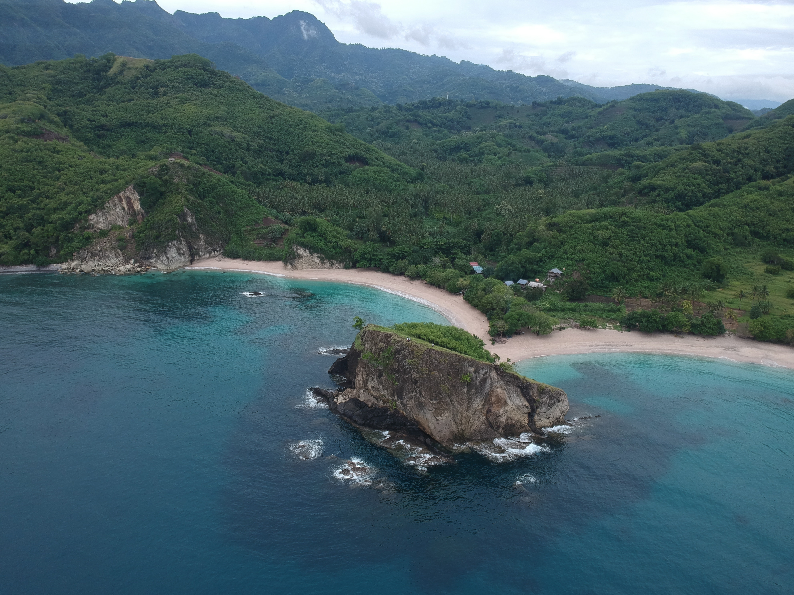
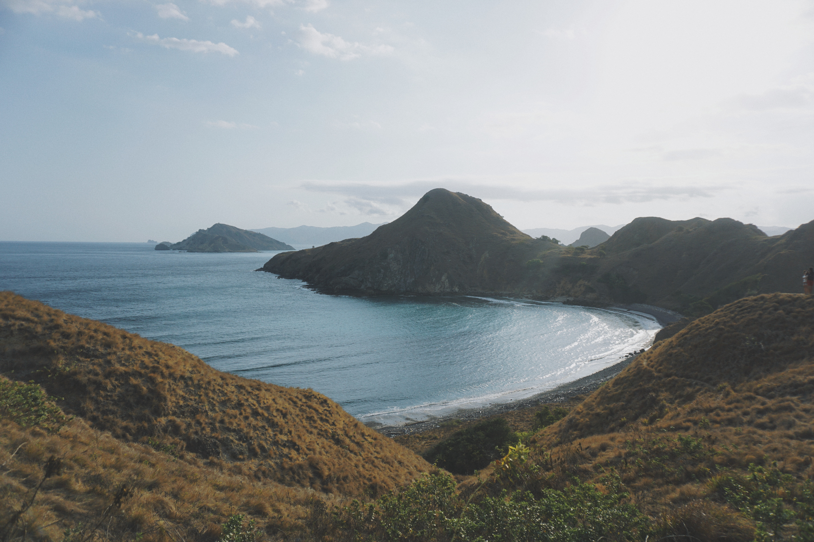
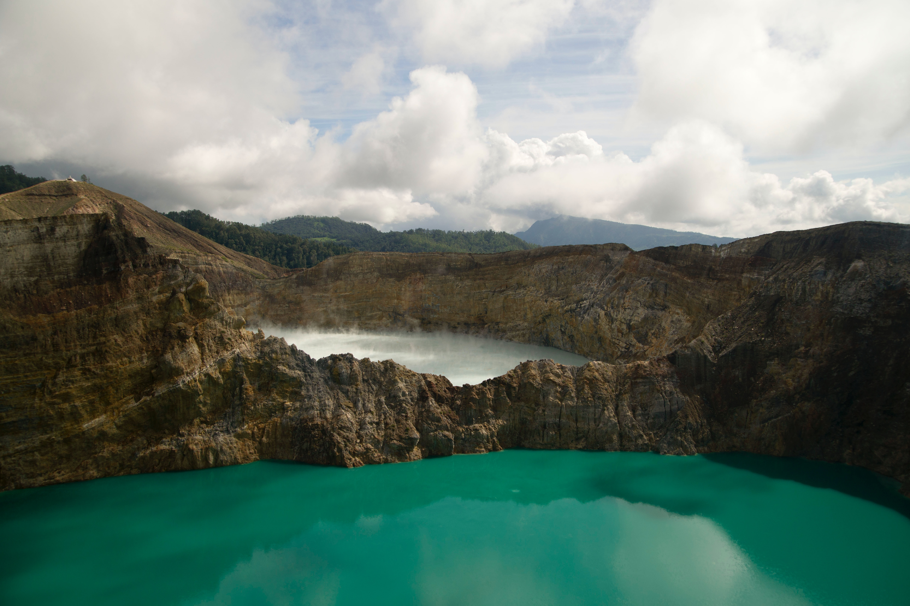

Tentang Nusa Tenggara Timur




Nusa Tenggara Timur (NTT) adalah sebuah provinsi di Indonesia yang meliputi
bagian timur Kepulauan Nusa Tenggara. Provinsi ini memiliki ibu kota di Kota Kupang dan memiliki 22
kabupaten/kota. Provinsi ini berada di Kepulauan Sunda Kecil. Tahun 2022, penduduk provinsi ini
berjumlah 5.446.285 jiwa, dengan kepadatan 114 jiwa/km2.Setelah pemekaran, Nusa Tenggara Timur adalah
sebuah provinsi Indonesia yang terletak di bagian tenggara Indonesia. Provinsi ini terdiri dari beberapa
pulau, antara lain pulau Flores, pulau Sumba, pulau Timor, pulau Alor, pulau Lembata, pulau Rote, pulau
Sabu, pulau Adonara, pulau Solor, pulau Ende, pulau Komodo dan pulau Palue. Provinsi ini terdiri dari
1.192 pulau, tiga pulau utama di Nusa Tenggara Timur adalah Pulau Flores, Pulau Sumba dan Pulau Timor
(bagian barat).